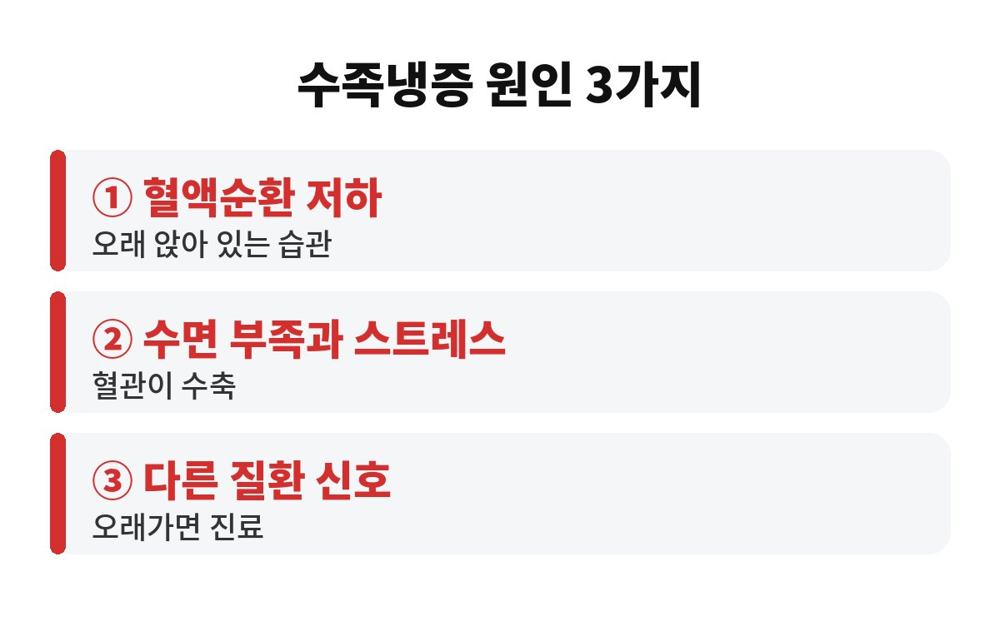
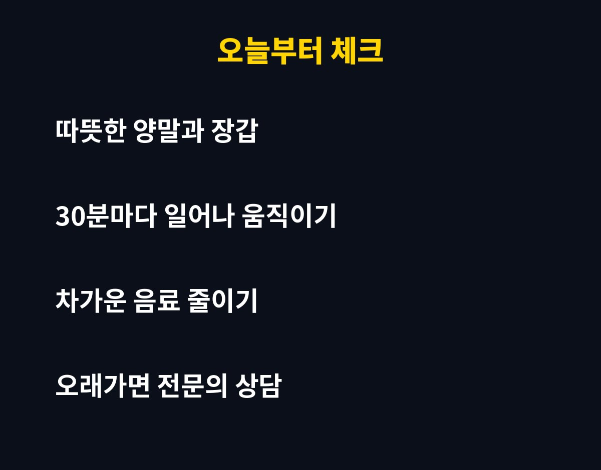

수족냉증 원인은 크게 혈액순환 저하, 수면과 스트레스, 그리고 다른 질환의 신호 세 가지로 나눠 볼 수 있어요. 요즘 아침저녁으로 손발이 유독 시리다면, 내 습관 중 어떤 게 범인인지 궁금하시죠?
날씨가 쌀쌀해지면 "나만 손발이 이렇게 차가운 건가?" 싶은 분들이 부쩍 늘어요. 오늘은 수족냉증 원인을 하나씩 짚어보고, 오늘 밤부터 바로 해볼 수 있는 방법까지 편하게 알려드릴게요.
우리 몸은 추우면 체온을 지키려고 손과 발 같은 끝부분의 혈관을 먼저 좁혀요. 중요한 장기부터 따뜻하게 지키려는 자연스러운 반응이죠. 그런데 이 반응이 지나치게 심하거나 따뜻한 곳에서도 계속되면 흔히 말하는 수족냉증으로 이어질 수 있어요.
그래서 수족냉증 원인을 찾을 때는 "혈관이 얼마나 쉽게 좁아지는가"와 "피가 끝까지 잘 도는가"를 함께 봐야 해요. 둘 중 하나만 삐끗해도 손끝 발끝이 얼음장처럼 느껴질 수 있거든요.
첫 번째 원인은 움직임 부족이에요. 사무실에서 몇 시간씩 꼼짝 않고 앉아 있으면 다리 근육이 펌프 역할을 못 해서 피가 아래쪽에 고이기 쉬워요. 특히 다리를 꼬거나 발을 바닥에 붙이지 못하고 앉는 자세는 혈액순환을 더 방해할 수 있죠.
해결은 의외로 간단해요. 한 시간에 한 번만이라도 일어나서 종아리를 펴고, 발뒤꿈치를 올렸다 내리는 동작을 해 보세요. 거창한 운동이 아니어도 괜찮아요. 근육이 움직여야 피도 따라 움직이니까요.
두 번째 원인은 수면 부족과 스트레스예요. 긴장하거나 예민해지면 우리 몸은 교감신경이 활발해지면서 혈관이 더 쉽게 수축해요. 그래서 시험 날이나 중요한 발표 앞에서 손이 차가워지는 경험, 다들 한 번쯤 있으시죠?
이런 상태가 매일 반복되면 수족냉증이 더 두드러질 수 있어요. 잠들기 전 휴대폰을 오래 보는 습관, 늦은 시간의 카페인, 밤늦게까지 걱정을 붙잡고 있는 습관이 은근히 손발을 차갑게 만드는 주범이 되기도 해요. 자기 전 미지근한 물에 발을 담그는 족욕은 몸의 긴장을 풀어주는 데 도움이 된답니다.

세 번째 원인은 다른 질환의 신호예요. 갑상선 기능이 떨어졌거나 빈혈이 있을 때, 혈관이나 신경에 문제가 있을 때도 손발이 차가워질 수 있어요. 이 경우에는 생활 습관만 고쳐서는 좋아지지 않을 수 있죠.
이런 경우라면 한 번 진료를 받아 보세요. 손가락이나 발가락 색이 하얗게 또는 파랗게 변했다가 돌아오는 경우, 통증이나 저림이 함께 오는 경우, 상처가 잘 낫지 않는 경우, 한쪽만 유독 차가운 경우예요. 몇 주 이상 계속되거나 점점 심해진다면 미루지 말고 전문의와 상의하는 게 안전해요.
가장 쉬운 시작은 보온이에요. 손목, 발목, 목처럼 혈관이 피부 가까이 지나가는 부위를 따뜻하게 감싸 주면 체감 온도가 확 달라져요. 양말은 꽉 조이는 것보다 넉넉하고 두툼한 걸 고르시고, 외출할 땐 얇은 장갑이라도 챙겨 보세요.
다음은 음료 습관이에요. 차가운 음료를 자주 마시면 속이 차가워지는 느낌이 들 수 있으니, 따뜻한 차나 미지근한 물로 바꿔 보세요. 그리고 담배는 혈관을 좁히는 대표적인 요인이라 수족냉증이 있다면 줄이는 쪽이 도움이 돼요. 마지막으로 가벼운 걷기를 하루 20~30분 정도만 꾸준히 해 주면 혈액순환에 좋은 습관이 됩니다.
| 원인 | 이런 습관이 흔해요 | 오늘 할 일 |
| 혈액순환 저하 | 오래 앉아 있기, 다리 꼬기 | 한 시간마다 일어나 스트레칭 |
| 수면·스트레스 | 늦은 카페인, 밤늦은 휴대폰 | 자기 전 족욕, 화면 줄이기 |
| 다른 질환 신호 | 색 변화, 저림, 오래가는 냉감 | 전문의 상담 받기 |
정리하면 수족냉증 원인은 한 가지가 아니라 습관과 몸 상태가 겹쳐서 생기는 경우가 많아요. 그래서 하나만 고치려 하지 말고 앉는 시간, 수면, 보온을 같이 챙기는 게 좋아요. 올겨울 손발이 시려도 조금 덜 고생하려면, 오늘 어떤 습관부터 바꿔 보실래요?

도움이 되셨다면 구독과 공감 부탁드려요. 다음에도 생활 속 건강 이야기로 찾아올게요.
※ 이 글은 일반적인 건강 정보이며 진단이나 치료를 대신하지 않아요. 증상이 계속되면 전문의 상담을 권장합니다.